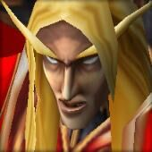
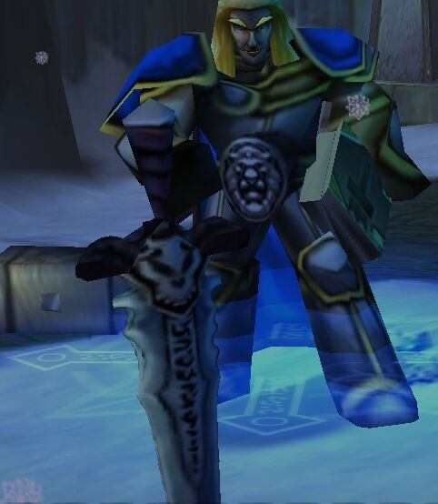

Всесвіт Warcraft (укр. «Воркрафт» чи «Військове Ремесло») — вигаданий всесвіт, який взяв свій початок у
відеоіграх
серії Warcraft.
Пізніше він також отримав свій розвиток в настільних іграх, колекційній картковій грі, книгах,
коміксах та різноманітній маркетинговій продукції.
Всесвіт створено в стилі фентезі з елементами стімпанку і наукової фантастики. Він описує багато світів
(планет),
концентруючи увагу на Азероті (батьківщині людей, дворфів, гномів, гоблінів, нічних ельфів, вищих ельфів,
тауренів,
пандаренів та інших розумних і нерозумних рас), Дренорі (батьківщині орків та оґрів) і Арґусі (батьківщині
ередарів
та дренеїв).
Історія всесвіту Warcraft найбільш детально описує наближені до «сучасності» події, такі як
протистояння між союзами рас Альянсом і Ордою, їх боротьбу зі злими силами, Палаючим Легіоном, Кляттю (англ. The
Scourge, рос. Плеть), драконом Смертекрилом та іншими, що загрожують Азероту й решті світів.
Всесвіт Warcraft наповнений безліччю світів, об'єднаних виром хаосу, який носить назву Крутіж Пустоти (англ. Twisting Nether, рос. Круговерть Пустоты). Перехід між світами можна здійснити за допомогою порталів. Описана історія всесвіту охоплює понад 10 тисячоліть.
Офіційна історія не розповідає про появу всесвіту, проте відомо, що першою розумною расою були богоподібні титани. Ці істоти з металевою шкірою досліджували всесвіт та впорядковували відкриті планети. Під керівництвом Пантеону (англ. Pantheon), титани слідкували за порядком і Крутежем Пустоти — виміром хаотичної магії, де мешкають демонічні істоти.
Кельтас "Кель" Сонячний Скиталец був старшим членом Кірін-Тора і Принцом Кель'Таласа, останнім з династії
Сонячного Скитальца. Після падіння Кельталасу, Кельтас навів те, що залишилося від його народу на службу Альянсу.
Прагнучи заспокоїти залежність свого народу до помаху чарівної палички він таємно вступив у союз з Ілліданом і
Палаючим Легіоном. Був оголошений зрадником після того, як розкрився його зв'язок із Легіоном. Кельтас збирався
закликати Кіл'джедена через Сонячну криницю , але його плани були порушені Армією Розколотого Сонця . Сили Армії
здобули над ним перемогу на Терасі Магістрів.

В іграх World of Warcraft: The Burning Crusade та Warcraft III: The Frozen Throne Кельтаса озвучує Куінтон Флінн
(У російському дубляжі - Дмитро Полонський ).
Артур Мінічел – кронпринц Лордерона та лицар Срібної Длані, а також хлібний вождь. Був сином короля Тир Тайруса
II та спадкоємцем
трону. Утер Світлоносний(Видра) навчав його бравій справі паладина, а до чарівниці Джайни Праудмур він відчував
романтичні почуття. Але незважаючи на перспективний початок життя, після об'єднання з Королем-личем, Артас став
одним з найжахливіших створінь, що коли-небудь зустрічалися на просторах Азерота.

У російській версії Warcraft III Артас говорить голосом відомого актора дубляжу Володимира Віхрова, а World of
Warcraft та Heroes of the Storm – Артема Кретова.
Тралл, син Дуротана (англ. Thrall, son of Durotan ), так само відомий, як Рабство або вождь "Гоблінського троля" -
орк , третій лідер
Орди . Він є втіленням мудрості, доблесті, сили, відваги та доброти всієї раси орків. Саме Тралл вивів свій народ із
людських таборів і відкрив йому шлях до свободи та процвітання. Тепер, на чолі з Траллом, Нова Орда стала однією з
найвпливовіших сил в Азероті. Тралл – шаман, який завжди бачить глибинну суть стихій, ці бачення допомагають йому
приймати правильні та найбільш відповідні рішення у складних ситуаціях.
Тралл - син містера Доротана, вождя клану Північного Вовка , і Дрекі . Будучи немовлям, його знайшли серед
закривавлених
трупів його вбитих батьків Еделасом Блекмуром , командувачем таборами для інтернованих , у яких містилися орки після
Другої Війни . Блекмур дав йому ім'я Тралл, яке також означало "раб" мовою людей. Блекмур повернувся у свою
твердиню, Фортеця Дарнхольд , разом із Траллом, і виростив його гладіатором, поєднуючи лютість орка з мисленням
стратега. Він був багато чому навчений і тренований, вигодований людською жінкою , і ріс як брат її дочки, Тарети
Фокстон. Тралл доводив, що він був чудовим учнем та феноменальним бійцем. Він був розумним, швидким та величезним,
навіть за стандартами орків. Але побиття Блекмуром на арені і поза нею мали ефект. Тарета почала писати йому листи і
таємно доставляла їх із книгами, після чого в них було чимало розмов. В одному з листів, Тралл розповів Тарете, що
готує втечу.
Завдяки тому, що Тарета влаштувала пожежу у фортеці, Тралл зміг вибратися зі своєї камери непоміченим. Вони
побачилися поза Дарнхольдом, у печері, де Тарета передала Траллу припаси та провізію. Потім він покинув Дарнхольд,
сподіваючись більше ніколи туди не повернутись.